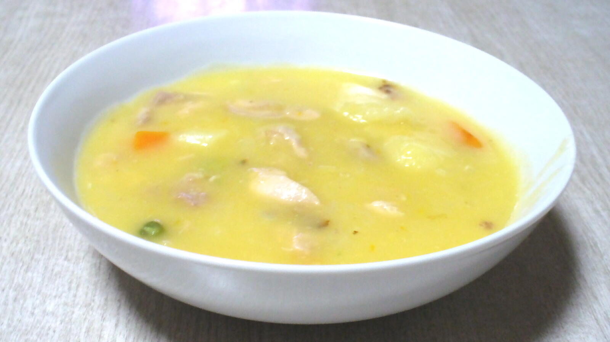

Simple and easy one pot meal.
Roughly chop your vegetables and put them inside your instant pot.
Add you chicken whole, a dash of salt, black pepper, dried oregano and thyme, then puor in your chicken broth untill your ingredients are fully immerged.
Put on the lid and turn on your instant pot on high pressure for 10minutes with a 10minutes natural steam release.
When the timer is over take out the chicken breast and cut it into bite size pieces or shred it with two forks.
Grab a bowl and a ladle, mix your yoghurt and cream cheese
while slowly add in some of the broth while mixing in order and avoid and prevent curdling.
After that pour it inside the pot and blend everything togheter with the blender.
Once it has reached your desire consistency add the chicken back and check the seasoning, adjust if needed.
Add fresh parsley and serve.